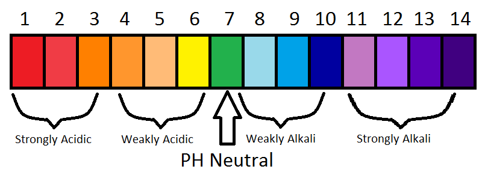

Marko Doroch's pH-o-meter

Hydrochloric acid
Battery acid
Lemon juice
Vinegar
Apples
Wine and beer
Tomatoes
Milk
Pure water
Human blood
Baking soda
Milk of magnesia
Ammonia
Lime
Lye
Sodium Hydroxide
Has a pH of 0
Enter a pH: